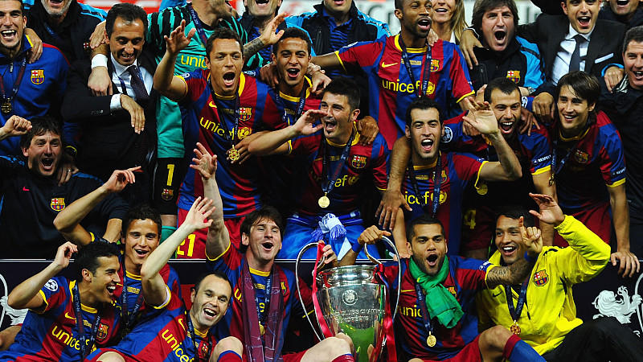
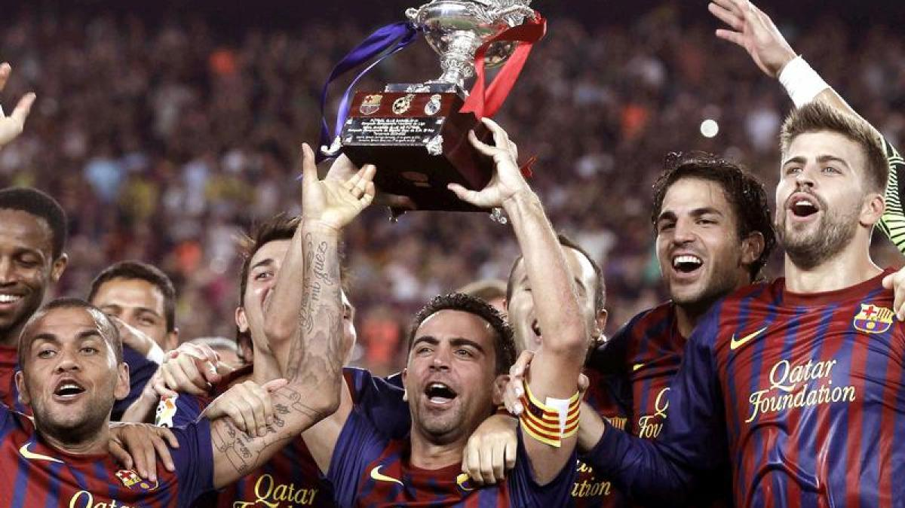

Hier werde ich um mein Lieblings verein schreiben.
Founded29 November 1899 · as Foot-Ball Club Barcelona
President Joan Laporta
Head coach Xavi
LeagueLa Liga
GroundCamp Nou
Capacity99,354
Home coloursAway colours
Full nameFutbol Club Barcelona
Besucht LaLiga - Erfolge: alle Meister in der Übersicht.Insgesamt triumphierte Barcelona fünfmal in der Königsklasse. Nur vier Vereine haben die Champions League häufiger gewonnen - und nur Rekordsieger Real Madrid gewann die Champions League in den letzten zwei Dekaden häufiger als der FC Barcelona, nämlich siebenmal gegenüber Barças fünf Triumphen in der Neuzeit.
In der Geschichte des Europapokals der Pokalsieger errangen 32 verschiedene Vereine den Titel. Der erfolgreichste Verein des Wettbewerbs ist der FC Barcelona mit vier Erfolgen und zwei weiteren Finalteilnahmen.
Abkürzung: Pokal der Pokalsieger, Cupsieger-Cup
Erstaustragung: 1960/61
Mannschaften: 49 (bei letzter Austragung)
Verband: UEFA
